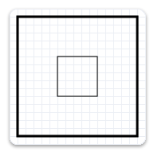

title: ID2D1Factory CreateTransformedGeometry methods (D2d1.h) description: Transforms the specified geometry and stores the result as an ID2D1TransformedGeometry object. ms.assetid: 71f26200-0f35-49d7-951d-2962768d16bc keywords:
Transforms the specified geometry and stores the result as an ID2D1TransformedGeometry object.
| Method | Description |
|---|---|
| CreateTransformedGeometry(ID2D1Geometry*,D2D_MATRIX_3X2_F*,ID2D1TransformedGeometry**) | Transforms the specified geometry and stores the result as an ID2D1TransformedGeometry object. |
| CreateTransformedGeometry(ID2D1Geometry*,D2D_MATRIX_3X2_F&,ID2D1TransformedGeometry**) | Transforms the specified geometry and stores the result as an ID2D1TransformedGeometry object. |
Like other resources, a transformed geometry inherits the resource space and threading policy of the factory that created it. This object is immutable.
When stroking a transformed geometry with the DrawGeometry method, the stroke width is not affected by the transform applied to the geometry. The stroke width is only affected by the world transform.
The following example creates an ID2D1RectangleGeometry, then draws it without transforming it. It produces the output shown in the following illustration.
hr = m_pD2DFactory->CreateRectangleGeometry(
D2D1::RectF(150.f, 150.f, 200.f, 200.f),
&m_pRectangleGeometry
);
The next example uses the render target to scale the geometry by a factor of 3, then draws it. The following illustration shows the result of drawing the rectangle without the transform and with the transform; notices that the stroke is thicker after the transform, even though the stroke thickness is 1.

// Transform the render target, then draw the rectangle geometry again.
m_pRenderTarget->SetTransform(
D2D1::Matrix3x2F::Scale(
D2D1::SizeF(3.f, 3.f),
D2D1::Point2F(175.f, 175.f))
);
m_pRenderTarget->DrawGeometry(m_pRectangleGeometry, m_pBlackBrush, 1);
The next example uses the CreateTransformedGeometry method to scale the geometry by a factor of 3, then draws it. It produces the output shown in the following illustration. Notice that, although the rectangle is larger, its stroke hasn't increased.

// Create a geometry that is a scaled version
// of m_pRectangleGeometry.
// The new geometry is scaled by a factory of 3
// from the center of the geometry, (35, 35).
hr = m_pD2DFactory->CreateTransformedGeometry(
m_pRectangleGeometry,
D2D1::Matrix3x2F::Scale(
D2D1::SizeF(3.f, 3.f),
D2D1::Point2F(175.f, 175.f)),
&m_pTransformedGeometry
);
// Replace the previous render target transform.
m_pRenderTarget->SetTransform(D2D1::Matrix3x2F::Identity());
// Draw the transformed geometry.
m_pRenderTarget->DrawGeometry(m_pTransformedGeometry, m_pBlackBrush, 1);
| Requirement | Value |
|---|---|
| Header | D2d1.h |
| Library | D2d1.lib |
| DLL | D2d1.dll |